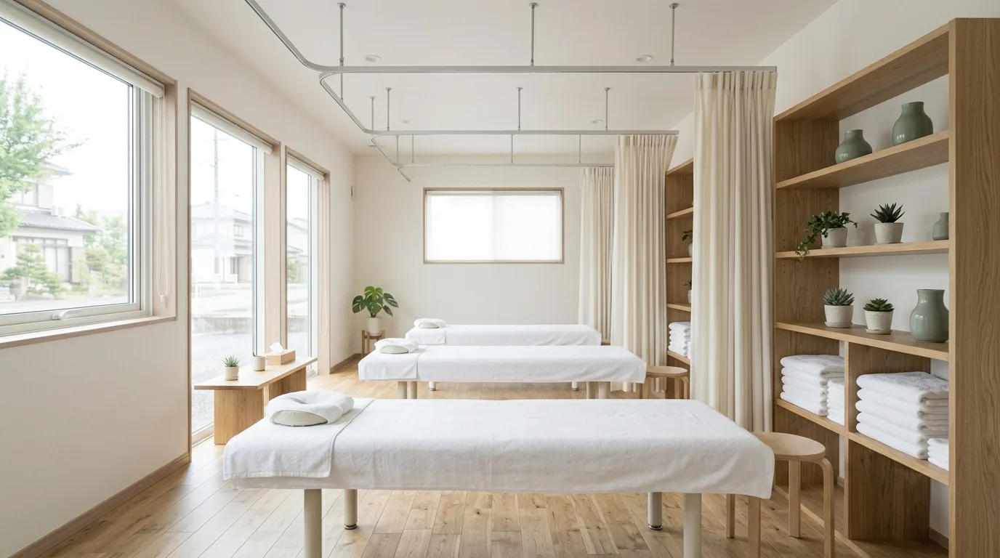

ABOUT & ACCESS
院のこだわり・院内案内
大切にしていること、院内の各スペース、受付時間とアクセスをまとめています。初めてお越しになる方は、こちらから雰囲気をご確認ください。
院のこだわり
「からだの声に、ちゃんと向き合う。」を合言葉に、症状のお伺いから施術までを一人ひとりに合わせて進めています。
からだの声に、ちゃんと向き合う。
肩こり・腰痛・スポーツ外傷など、一人ひとりの症状に合わせた施術を行っています。初めての方も安心して通っていただけるよう、丁寧なカウンセリングを心がけています。
同じ「肩がこる」でも、原因になっている動作や普段の姿勢は人によって異なります。だからこそ、はじめにお話をお伺いする時間を大切にしています。施術中も、感じ方をその都度確認しながら進めます。
施術内容や通院のペースについては、ご相談のうえでご案内します。分からないことや不安なことは、遠慮なくお尋ねください。
-
01
一人ひとりの症状に合わせた施術
肩こり・腰痛・スポーツ外傷など、お困りの内容はさまざまです。お一人おひとりの症状に合わせて、施術の内容を組み立てています。
-
02
丁寧なカウンセリング
いつから、どんなときに気になるのか。お仕事や普段の姿勢、運動の習慣まで丁寧にお聞きしてから施術に入ります。
-
03
初めての方も安心して
初めての方も安心して通っていただけるよう、施術の進め方や当日の流れをその都度ご説明しながら進めています。
施術の内容や結果をお約束するものではありません。症状の感じ方や経過には個人差があります。
院内のご案内
初めてお越しになる方が院内の雰囲気を事前に確認できるよう、スペースごとに写真を掲載しています。
- 01通路・受付
- 02待合スペース
- 03施術スペース
- 04ストレッチスペース
- 05カウンター・備品
- 06スタッフ


施術スペースと外観
施術を受けていただくスペースと、建物の外観です。ご来院の際の目印にしてください。

施術スペース
施術ベッドを並べたスペースです。タオルやリネンはご来院ごとに用意しています。

建物の外観
入口まわりに植栽を置いています。はじめての方は、こちらの外観を目印にお越しください。
受付時間
受付は9:00〜19:00です。休診日は日曜・祝日となります。
| 受付時間 | 月 | 火 | 水 | 木 | 金 | 土 | 日 |
|---|---|---|---|---|---|---|---|
| 9:00〜19:00 | 受付 | 受付 | 受付 | 受付 | 受付 | 受付 | 休診 |
● 受付 9:00〜19:00 × 休診（日曜・祝日）
祝日は休診です。受付状況の表示は曜日と時刻のみで判定しているため、祝日は反映されません。ご来院前にLINEまたはメールでご確認いただけます。
受付状況を確認中
受付状況を確認しています
お使いの端末の日付をもとに表示しています。
- 受付時間
- 9:00〜19:00
- 休診日
- 日曜・祝日
アクセス・お問い合わせ
ご予約やご相談は、LINEまたはメールから承ります。
| 院名 | みなと接骨院 |
|---|---|
| 住所 | 福岡県福岡市〇〇区〇〇3-1-8 |
| 受付時間 | 9:00〜19:00 |
| 休診日 | 日曜・祝日 |
| お問い合わせ | info@example.com |
| LINE | LINEで問い合わせる |